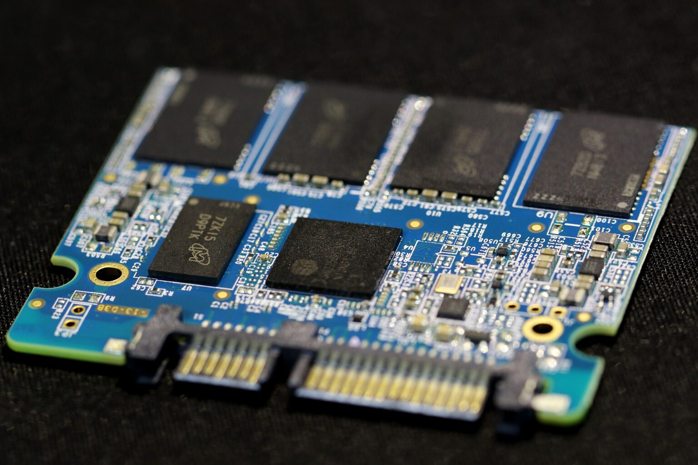

SSD (Solid State Drive): Evoluția stocării de date și optimizarea sistemului
De ce unitățile flash reprezintă cea mai importantă componentă pentru timpii de răspuns ai sistemului și cum diferă rețelele semiconductoare de vechile hard disk-uri mecanice.
Unitatea de tip SSD (Solid State Drive) reprezintă o evoluție tehnologică firească a stocării de date, ale cărei baze au fost puse inițial de banalele stick-uri de memorie USB. Astăzi, numărul utilizatorilor care mai folosesc discuri optice precum CD-uri sau DVD-uri este extrem de redus, majoritatea transferurilor de fișiere realizându-se pe memorii flash portabile datorită vitezei superioare, fiabilității mecanice și capacităților mari de stocare.
Deoarece rezultatele acestei tehnologii s-au dovedit net superioare, arhitectura chip-urilor de memorie a devenit fundația pentru dezvoltarea unui nou mediu de stocare intern, menit să înlocuiască complet ideea de hard disk tradițional în calculatoare și laptopuri.
Prin ce se diferențiază un Hard Disk mecanic de un SSD?
Deși hard disk-urile mecanice (HDD) nu vor dispărea complet prea curând din industrie, fiind folosite ca tehnologii complementare pentru stocarea masivă de date, diferențele de performanță sunt uriașe. Un SSD nu conține piese în mișcare, oferind un acces aproape instantaneu la informație. Chiar și în cazul renumitelor transferuri secvențiale, unde un HDD rapid se descurcă bine, un SSD din generația actuală livrează viteze de 3 până la 4 ori mai mari pe interfața SATA și de peste 20-30 de ori mai mari pe interfețele NVMe.
Când analizăm cel mai dezavantajos scenariu pentru un hard disk mecanic – și anume citirea aleatorie a fișierelor mici –, unitățile SSD fac parte dintr-o cu totul altă ligă tehnică. Din acest motiv, stocarea masivă de arhive sau filme se pretează pe hard disk-uri clasice, în timp ce sistemul de operare, programele, bazele de date și fișierele temporare de sistem (swap files) au un beneficiu uriaș dacă sunt instalate direct pe un SSD.

Foto: Structura internă a unui SSD, compusă exclusiv din chip-uri de memorie NAND Flash și un controller inteligent, fără componente mecanice.
Cât costă o unitate SSD și cum este recomandat să o folosești?
Sarcinile care solicită intens unitatea de stocare, cum ar fi încărcarea sistemului de operare Windows sau pornirea aplicațiilor complexe, reprezintă punctul forte al unui SSD. Pentru a obține un raport ideal între cost și performanță, regula de aur este instalarea sistemului de operare, a jocurilor și a programelor frecvent utilizate pe SSD, lăsând datele masive sau rar accesate pe un hard disk secundar.
Dacă ești obișnuit să aștepți un minut sau două pentru ca laptopul tău să devină utilizabil după pornire, trecerea la un SSD va schimba complet experiența. Specialitatea unui Solid State Drive este gestionarea fișierelor simultane. Un hard disk mecanic este forțat să își miște fizic capetele de citire/scriere peste platourile magnetice pentru a găsi datele împrăștiate, generând latențe mari. La un SSD, această latență mecanică este egală cu zero.
Aplicațiile profesionale mari (cum ar fi Photoshop, Premiere Pro, Outlook) sau jocurile moderne conțin mii de librării asociate. Încărcarea lor de pe un HDD clasic cauzează întârzieri majore, blocaje temporare în interfață și pierderi de cadre (stuttering).
Cum se realizează corect un upgrade la SSD?
În cadrul laboratorului nostru de service, implementăm trei metode sigure pentru migrarea sistemului tău pe o unitate flash:
Instalarea curată a sistemului de operare: Reinstalarea completă de la zero a Windows-ului pe noul SSD pentru o stabilitate maximă a regiștrilor.
Clonarea partitiei principale: Copierea identică a partiției cu sistemul de operare și programele existente direct pe noul SSD, fără a pierde date sau setări.
Clonarea integrală a mediului de stocare: Transferul complet al tuturor partițiilor, optim de executat atunci când noul SSD are o capacitate egală sau mai mare decât vechiul HDD.
🔧 Fiecare operațiune de upgrade, montaj de unități M.2 NVMe sau clonare de date se execută în condiții de siguranță profesională la sediul service-ului independent din București, Sector 6, Strada Aleșd nr. 10. Consultanța hardware și diagnosticarea inițială a echipamentului tău rămân complet gratuite.
Avantajele majore ale tehnologiei Solid State
Deoarece unitățile SSD nu au piese în mișcare, riscul unei defecțiuni mecanice în urma unui impact fizic este complet eliminat. Acest aspect le face extrem de rezistente în cazul laptopurilor transportate zilnic. Totuși, ele nu sunt complet indestructibile; circuitele lor logice rămân vulnerabile la fluctuațiile severe de tensiune de la rețea sau la contactul direct cu lichide.
Tehnologia celulelor de stocare pe chip-uri NAND a fost preluată și integrată masiv inclusiv în telefoanele mobile moderne, oferind rate de transfer ultra-rapide. Pe lângă performanța brută, un SSD consumă considerabil mai puțin curent electric decât un motoras de hard disk mecanic, fapt ce adaugă, în medie, între 30 și 60 de minute la autonomia bateriei unui laptop.
Interconectarea cu celelalte ghiduri hardware
Rata de transfer a unui SSD modern este strâns legată de magistralele de date controlate de placa de bază. Pentru a înțelege cum gestionează chipset-ul liniile de mare viteză PCIe, citește Ghidul de Arhitectură al Plăcii de Bază PC. Dacă plănuiești o configurație nouă de gaming și vrei să alegi o sursă care să ofere linii de alimentare perfect stabilizate pentru protecția celulelor de memorie, parcurge ghidul despre Alegerea și Instalarea Sursei de Alimentare PC.
Laptopul sau calculatorul tău se mișcă greu sau se blochează în aplicații?
Un upgrade la SSD este cea mai ieftină și eficientă metodă de a readuce la viață un sistem hardware. Diagnosticarea și consultanța la noi sunt gratuite.